16 Summarizing Trends involving Many Groups
Today
$$ \newcommand{X}{} \newcommand{Y}{}
$$
- We’re going to look at the relationship between income and education.
- We’ve done that before. When we did, we thought of education in dichotomous terms.
- We had some people with 4-year degrees — the green dots.
- We had some people without them — the red dots.
- Today, we’ll be a bit more granular. We’ll think of education in terms of years of schooling.
- 8+ years = finished middle school
- 12+ years = high school diploma
- 16+ years = 4-year college degree
Ignore the gaps at 15 and 17 years for now. We’ll come back to them.
Our Sample
- As before, we’ll work with data from the 2022 Current Population Survey.
- We’ll look at California residents age 25-35 with at least an 8th-grade education.
- This sample includes 2271 people.
- To visualize it, I’ve marked each one on a map.
- To display some of the information we have, I’ve made a table.
- I’ve used color to emphasize the dichotomous view of education we’ve been using.

| income | education | age | county | |
|---|---|---|---|---|
| 1 | $55k | 13 | 35 | orange |
| 2 | $25k | 13 | 27 | LA |
| 3 | $44k | 16 | 34 | san joaquin |
| 4 | $22k | 14 | 34 | orange |
| 5 | $0k | 16 | 31 | san diego |
| 6 | $105k | 16 | 27 | LA |
| 7 | $1k | 16 | 25 | LA |
| 8 | $21k | 14 | 30 | unknown |
| ⋮ | ||||
| 2270 | $85k | 16 | 31 | orange |
| 2271 | $150k | 16 | 32 | stanislaus |
The locations shown on the map are made up. They’re not the actual locations of the people in the sample.
The survey includes some location information for some people, but as you can see in the table, not for everyone.
A Reminder about Visualization

- Our primary visualization will be a scatter plot. It shows a dot for each person in our sample.
- The person’s income is on the y-axis and their education on the x-axis.
- We add a bit of fuzz to the displayed x-coordinate to space the dots out.
- But not so much that it’s not clear what the real value of \(X\).
- This is called ‘jittering’. Sometimes a plot like this is called a ‘jitter plot’.
- As before, we can use color to highlight the categories of people with and without 4-year degrees.
What We Want to Know


| income | education | county | |
|---|---|---|---|
| 1 | $22k | 18 | unknown |
| 2 | $0k | 16 | solano |
| 3 | $98k | 16 | LA |
| 4 | $25k | 12 | tulare |
| 5 | $19k | 14 | san luis obispo |
| ⋮ | |||
| 5677499 | $11k | 10 | alameda |
| 5677500 | $116k | 18 | unknown |
| income | education | county | |
|---|---|---|---|
| 1 | $55k | 13 | orange |
| 2 | $25k | 13 | LA |
| 3 | $44k | 16 | san joaquin |
| 4 | $22k | 14 | orange |
| 5 | $0k | 16 | san diego |
| ⋮ | |||
| 2270 | $85k | 16 | orange |
| 2271 | $150k | 16 | stanislaus |
Population
Sample
- We’re not particularly interested in our sample itself, i.e., Californians age 25-35 who responded to the survey.
- We’re interested in the population from which it’s sampled, i.e. all Californians age 25-35.
- That’s not new. We’ve been doing this since the semester started. And we have a recipe for doing it.
- Choosing a target. We think about how we would summarize the population if we had surveyed everyone.
- Point estimation. However we would summarize the population, we do summarize our sample.
- Interval estimation. We work out what our point estimator’s sampling distribution tells us about our target.
What is New
- Now that we’re taking a more granular view of education, there’s a lot more to the first step.
- Today, all we’ll do is think about what we might want to know. We’ll talk as if we had surveyed everyone.
- Next time, we’ll talk about point and interval estimation. It’ll be familiar, but there’ll be some new twists.
The population we’re looking at is made up. It’s just an illustration. We don’t actually have all this information.
Summarization
- Looking at the dots alone, we can get rough answers to some simple questions.
- We can see that people with four-year-degrees tend to earn more than people without them.
- But it’s hard to be precise just eyeballing things. It helps to look at numerical summaries.
- We’ve can, e.g., overlay the mean income \(\pm\) one standard deviation for each group.
- That’s shown by the dot’s position and its ‘arms’ on the y-axis.
- Its position on the x-axis shows the mean years of schooling within the group.
The Dichotomous Version
- It’s worth visualizing the information lost by dichotomizing education.
- To do this, we can look at a similar plot without that information. This one.
- In it, I’ve replaced the x-coordinates with random values that tell us nothing beyond group membership.
- People without 4-year degrees get random values uniformly distributed between 8 and 14.
- That’s the range of years of schooling in that group.
- People with 4-year degrees get random values between 16 and 20.
- Same deal.
Column Comparisons
- Let’s think about what we can do with the additional information we have now.
- One simple option is to work with the finest grouping we can: the columns in our scatter plot.
- We can, e.g., look at the income mean and standard deviation for people with 8,9,10, etc. years of schooling.
- Or compare any pair of those groups. It’s natural to look at groups that are in some sense adjacent.
- 18 vs. 16: the value of a masters’ degree (only) vs. a 4-year one (only).
- 16 vs. 14: the value of a 4-year degree (only) vs. a 2-year degree (only).
- 14 vs. 12: the value of a 2-year degree (only) vs. a high school degree (only).
Column Comparisons as ‘Forgetting’

- This is essentially the same as what we did when we dichotomized education.
- We just ‘forget’ the other groups. We don’t look at them.
- Everything we proved before the midterm still applies: unbiasedness, variance formulas, etc.
- When we did the math on comparing two groups, we didn’t assume they were the only two groups.
- That’s great if we know exactly what we’re interested in—and it’s a comparison like this.
- But it’s not so great if we’re a bit less focused—if we want to talk about the whole population.
- That’d mean we might have to think about/report a lot of different numbers.
- It can get to be too much. We’re not summarizing enough.
Coarsening
- One remedy is to go back to working with coarser groupings.
- We can make up our own by aggregating—combining—the columns we have.
- Here, for example, is a breakdown in 4 groups.
- < 14 years: no college degree.
- =14 years: 2-year degree.
- =16 years: 4-year degree.
- > 16 years: graduate degree.
- This is more information than a two-group comparison but perhaps little enough to be manageable.
- We can visualize it all in a plot like the one above.
- Or report the set of group-specific summaries in a table like the one below.
| education | mean | sd | N |
|---|---|---|---|
| < 12 | 19K | 22K | 270K |
| 14 | 33K | 28K | 548K |
| 16 | 58K | 64K | 2M |
| > 16 | 84K | 82K | 770K |
Coarsening is Always Happening
education=case_match(cps.data$a_hga,
0 ~ 0, # child
31 ~ 0, # < grade 1
32 ~ 4, # grade 1-4
33 ~ 6, # grade 5-6
34 ~ 8, # grade 7-8
35 ~ 9, # grade 9
36 ~ 10, # grade 10
37 ~ 11, # grade 11
38 ~ 11, # grade 12 no diploma
39 ~ 12, # high school grad
40 ~ 13, # some college
41 ~ 14, # associate degree (vocational)
42 ~ 14, # associate degree (academic)
43 ~ 16, # bachelors degree
44 ~ 18, # masters degree
45 ~ 20, # professional school degree
46 ~ 20) # doctorate
- Often, the data we have is already coarsened to some degree.
- Our data does not, for example, distinguish between people with 7 and 8 years of schooling.
- Similarly, it doesn’t tell us years for people with graduate degrees. We’ve made that up.
- And to fit it into our analysis, we often have to coarsen it further.
- To fit education into our ‘years of schooling’ framework, we’ve grouped together people with …
- vocational and academic associate degrees. (12+2=14 years)
- professional and doctoral degrees. (16 + 4ish ≈ 20 years)
- Our choices about some of these made-up numbers create the gaps we see at 15,17,and 19 years.
- To fit education into our ‘years of schooling’ framework, we’ve grouped together people with …
- Keeping all this in mind can be overwhelming.
- It’s often a good idea to pick and abstraction — like years of schooling — and go with it.
- But it’s important to come back to this at some point to make sure your conclusions mean what you think they do.
- Suppose you see a bigger income jump between ‘8’ and 9 years of education than between 9 and 10.
- That might be because the group with ‘8’ years actually includes people with 7 and 8 years.
- So many of the people with ‘8’ years have 2 fewer years of schooling than the people with 9.
Dichotomization
- Often, when we want to report a numeric summary, we do resort to dichotomization.
- But having the more granular information allows us to choose the groups we want.
- There are many meaningful choices.
- >16: people with graduate degrees.
- ≤12: people who haven’t been to college.
A Coarsened Comparison: >16 vs. 16

Describe the comparison we’re visualizing, the difference in the means of the green dots and red dots, in …
- Words
- Mathematical notation
- R code
People with graduate degrees vs. people with 4-year degrees (only).
Option 1. A compact, readable version \[ \frac{\sum\limits_{j:x_j > 16} y_j}{\sum_{j:x_j > 16} 1} - \frac{\sum\limits_{j:x_j = 16} y_j}{\sum_{j:x_j = 16} 1} \]
Option 2. A verbose version that’s easier to use in probability calculations. \[ \frac{\sum\limits_{j=1}^n 1_{\{18,20\}}(x_j) y_j}{\sum\limits_{j=1}^n 1_{\{18, 20\}}(x_j)} - \frac{\sum\limits_{j=1}^n1_{\{16\}}(x_j)y_j}{\sum\limits_{j=1}^n 1_{\{16\}}(x_j)} \ \ \text{ where } \ \ 1_{S}(x) = \begin{cases} 1 & \text{ if } x \in S \\ 0 & \text{ otherwise} \end{cases}. \]
- Option 1. A compact, readable version
mean(y[x > 16]) - mean(y[x==16])[1] 25930.81- Option 2. A verbose version that’s easier to combine with more abstract code
groups = list(a = c(18,20), b=16)
mean(y[x %in% groups$a]) - mean(y[x %in% groups$b]) [1] 25930.81A Coarsened Comparison: 14 vs ≤12

Describe the comparison we’re visualizing, the difference in the means of the green dots and red dots, in …
- Words
- Mathematical notation
- R code
People with 2-year degrees (only) vs. people who haven’t completed a year of college.
A compact, readable version \[ \frac{\sum\limits_{j:x_j = 14} y_j}{\sum\limits_{j:x_j = 14} 1} - \frac{\sum\limits_{j:x_j \le 12} y_j}{\sum\limits_{j:x_j \le 12} 1} \]
A verbose version that’s easier to use in probability calculations \[ \frac{\sum\limits_{j=1}^n 1_{\{14\}}(x_j) y_j}{\sum\limits_{j=1}^n 1_{\{14\}}(x_j)} - \frac{\sum\limits_{j=1}^n1_{\{8 \ldots 12\}}(x_j)y_j}{\sum\limits_{j=1}^n 1_{\{8 \ldots 12\}}(x_j)} \ \ \text{ where } \ \ 1_S(x) = \begin{cases} 1 & \text{ if } x \in S \\ 0 & \text{ otherwise} \end{cases}. \]
- Option 1. A compact, readable version
mean(y[x == 14]) - mean(y[x<=12])[1] 5338.928- Option 2. A verbose version that’s easier to combine with more abstract code
groups = list(a = c(14), b=8:12)
mean(y[x %in% groups$a]) - mean(y[x %in% groups$b]) [1] 5338.928From Column Means to Coarsened Means

- We can express the means in our aggregate groups in terms of the means in our columns.
- Let’s define some notation describing the dots in each column to make this easier.
- \(m_x\) will be the number of dots, i.e. the number of people with \(x_j=x\).
- \(\mu(x)\) will be the mean height of the dots, i.e. the mean income of people with \(x_j=x\).
\[ \mu(x) = \frac{1}{m_x}\sum_{j:x_j=x} y_j \quad \text{ where } \quad m_x = \sum_{j:x_j=x} 1 \]
What, on the plot, corresponds to \(\mu(14)\)?
The black dot in the \(x=14\) column.
What, on the plot, corresponds to \(m_{12}\)?
The number of red dots in the column where \(x=12\).
What, in terms \(\mu(x)\), is the mean outcome among people in our sample who did not attend college?
Strategy.
- Where we see a sum over the people in the aggregate group, we rewrite it as a sum of sums.
A sum over columns of sums over the people in them. - We express each column’s sum in terms of its mean and its size.
- We make sense of the result.
\[ \begin{aligned} \frac{\sum\limits_{j:x_j \in 8 \ldots 12} y_j}{\sum\limits_{j:x_j \in 8 \ldots 12} 1} &= \frac{\textcolor[RGB]{239,71,111}{\sum\limits_{x \in 8 \ldots 12}}\textcolor[RGB]{17,138,178}{\sum\limits_{j:x_j=x}} y_j}{\textcolor[RGB]{239,71,111}{\sum\limits_{x \in 8 \ldots 12}}\textcolor[RGB]{17,138,178}{\sum\limits_{j:x_j=x}} 1} = \frac{\textcolor[RGB]{239,71,111}{\sum\limits_{x \in 8 \ldots 12}} \textcolor[RGB]{239,71,111}{m_x} \times \textcolor[RGB]{17,138,178}{\frac{1}{m_x}}\textcolor[RGB]{17,138,178}{\sum\limits_{j:x_j=x}} y_j}{\textcolor[RGB]{239,71,111}{\sum}\limits_{x \in 8 \ldots 12}\textcolor[RGB]{17,138,178}{m_x}} \\ &= \textcolor[RGB]{239,71,111}{\sum\limits_{x \in 8 \ldots 12}} p_x \times \textcolor[RGB]{17,138,178}{\mu(x)} \quad \text{ for } \quad p_x = \frac{\textcolor[RGB]{239,71,111}{m_x}}{\textcolor[RGB]{239,71,111}{\sum\limits_{x \in 8 \ldots 12}\textcolor[RGB]{17,138,178}{m_x}}}. \end{aligned} \]
- It’s a weighted average of the column means \(\mu(x)\).
- The weight \(p_x\) is the proportion of the people in the aggregate group that are in that column.
Aggregating Comparisons
- Another option—rather than comparing aggregates—is aggregating comparisons.
- We can summarize the ‘value’ of each year of high school by the associated increment in mean income.
- Visually, that’s the slope of the dashed black line leading up to it.
- To reduce these to a single number, we can take the average of the increments.
- Visually, that’s the slope of the secant—the blue one. In a sense.
- If that’s not obvious to you, don’t worry. We’ll come back to it in a minute.
- Why in a sense? Because there are two things we might mean by ‘the average of the increments’.
Different Ways of Aggregating

- The average, over the four years of high school, of the increments. Let’s write it out.
\[ \frac{1}{4}\sum_{x=9}^{12} \qty{ \mu(x) - \mu(x-1) } \]
- That’s the slope of the secant from \(\hat\mu(8)\) to \(\hat \mu(12)\)—the blue line.
- To see this, we can write out our four terms and see what cancels.
- It helps to count backward from \(x=12\).
\[ \frac{ \qty{\mu(12) - \mu(11)} + \qty{ \mu(11) - \mu(10) } + \qty{ \mu(10) - \mu(9) } + \qty{ \mu(9) - \mu(8) } }{4} = \frac{\mu(12) - \mu(8)}{4} \]
- As we go from \(x=8\) to \(x=12\), the ‘rise’ is \(\mu(12)-\mu(8)\) and the ‘run’ is \(12-8=4\); slope= rise / run.
Different Ways of Aggregating
- The average, over people with ≥1 year of high school, of the increments affecting them in their last year.
- That’s something different. For the majority of these people, their last year was their fourth.
- So most of the terms we’re averaging are the increment from the third to fourth year.
\[ \frac{\sum_{j:x_j \in 9 \ldots 12} \qty{ \mu(x_j) - \mu(x_j-1) }}{\sum_{j:x_j \in 9 \ldots 12} 1} = \sum_{x \in 9 \ldots 12} p_x \ \qty{ \mu(x) - \mu(x-1) } \quad \text{ for } \quad p_x = \frac{m_x}{\sum_{x \in 9 \ldots 12}m_x}. \]
We can try the ‘cancellation trick’ we used before, but it doesn’t work very well.
\[\small{ \begin{aligned} & p_{12} \qty{ \mu(12) - \mu(11) } + p_{11} \qty{ \mu(11) - \mu(10) } + p_{10} \qty{ \mu(10) - \mu(9) } + p_{9} \qty{ \mu(9) - \mu(8) } \\ &= p_{12}\mu(12) + (p_{11}-p_{12}) \mu(11) + (p_{10}-p_{11}) \mu(10) + (p_9 - p_{10}) \mu(9) - p_9\mu(8) \end{aligned}} \]
- We do get a linear combination of the column means, but it’s not an interpretable one.
- It will, however, be useful in calculations next time when we’re talking about inference.
Comparing Two Summaries

| Year Increment | → 9 | → 10 | → 11 | → 12 |
|---|---|---|---|---|
| Mean Income Increment | 2.1K | -11.4K | 10.2K | 10.6K |
| Proportion of People | 0.03 | 0.02 | 0.10 | 0.84 |
- Compare the average over people to the average over years.
- Is it bigger, smaller, or about the same?
- To answer this without calculation, we’ll draw a caricature of our data.
- 4 in 5 people graduate. We’ll think about what’d happen if 5 in 5 did.
- We’ve said the average over years is the slope of the blue line.
- In this caricature, what does the average over people look like?
| Year Increment | → 9 | → 10 | → 11 | → 12 |
|---|---|---|---|---|
| Mean Income Increment | 10.6K | |||
| Proportion of People | 0 | 0 | 0 | 1 |
- The average over people is bigger.
- In our caricature, it’s the increment in mean income from finishing year 12.
- That’s the the biggest increment in mean income we see from any year of high school.
- So it’ll be bigger than the average of all 4.
- In visual terms, we’re comparing the slope of the blue line to the slope of the last dashed line.
| Technique | Over People | Over Years |
|---|---|---|
| Caricature | 10.6K | 2.9K |
| Calculation | 9.79K | 2.86K |
Comparing Two More
| Year Increment | → 14 | → 16 | → 18 | → 20 |
|---|---|---|---|---|
| Mean Income Increment | 9.9K | 24.0K | 23.0K | 23.8K |
| Proportion of People | 0.18 | 0.55 | 0.21 | 0.06 |
- Let’s look at the same two types of average in a new context.
- We’ll think about the average value of another degree.
- That is, the average value of the increments …
- 12 → 14: from a high school diploma to a 2-year degree.
- 14 → 16: from a 2-year degree to a 4-year one.
- 16 → 18: from a 4-year degree to a masters degree.
- 18 → 20: from a masters degree to a doctorate.
- Compare the average over people to the average over degrees.
- Is it bigger, smaller, or about the same?
- In our last example, our caricature exaggerated the proportions—it made them 0 or 1.
- In this one, we can exaggerate the constancy of the increments.
| Year Increment | → 14 | → 16 | → 18 | → 20 |
|---|---|---|---|---|
| Mean Income Increment | 24K | 24K | 24K | 24K |
| Proportion of People | 0.18 | 0.55 | 0.21 | 0.06 |
- If we’re worried that we’re not being precise enough, we can use a more refined caricature.
- In this one, most — but not all — of the increments are the same.
| Year Increment | → 14 | → 16 | → 18 | → 20 |
|---|---|---|---|---|
| Mean Income Increment | 10K | 24K | 24K | 24K |
| Proportion of People | 0.18 | 0.55 | 0.21 | 0.06 |
- The two summaries are pretty close to the same. In our coarse caricature, they are the same.
- In our highly refined one, they’re still more or less the same.
- The average over years is $ 1/4 10K + 3/4 24K$
- The average over people is \(0.18 \times 10K + 0.82 \times 24K\).
- The one income difference we do acknowledge — the one for 2-year degrees — gets washed out.
- Why? Because the column it’s in has almost the same weight in both averages: 1/4.
- Roughly 1 in 4 people have 2-year degrees and that’s 1 of 4 degrees we’re talking about.
| Technique | Over People | Over Degrees |
|---|---|---|
| Coarse Caricature | 24K | 24K |
| Fine Caricature | 21K | 20K |
| Calculation | 21.22K | 20.18K |
The Impact of Variation in Slope


- In our high school example, our two summaries were pretty different.
- In our degree example, they were very similar.
- Why the difference?
- If the things you’re averaging are constant, it doesn’t matter how you average them.
- If they aren’t, it does matter how you average them. Or it might. The differences might wash out, too.
- Sometimes we happen to have the right weight in the right place, like in our refined caricature a minute ago.
- Sometimes things that are bigger and smaller than average wind up canceling out.
- Meaningfully different estimation targets often, but not always, have roughly the same numerical value.
- This has created a bit of a cultural problem in the sciences.
- Many people act as if different estimation targets were the same.
- They use language and notation that obscures the distinction.
- And people wind up choosing their estimation target when they think they’re only choosing an estimator.
- This leads to confusion when two people estimate different targets but don’t know it.
- And to some hard-to-make-sense-of estimation targets being very common.
- Next class, we’ll start to see why people make the decisions they do.
- We’ll talk about interval estimates for the targets we’ve discussed today.
- We’ll see that some targets are easier to estimate than others.
- i.e. we’ll get narrower intervals for some targets than for others using the same data.
Exercises
Storytelling, Visualization, and Estimation Targets
Three Stories About High School
Match each story to a plot above. Then, for each story, approximately calculate our two summaries.
- All that matters is the diploma.
- All that matters is 10th grade algebra.
- They teach the most important stuff first.
| Story | 1 | 2 | 3 |
|---|---|---|---|
| Plot | B | A | C |
| Average over Years | 2.95K | 2.95K | 2.95K |
| Average over People | 10K | 185 | 485 |
Match each story to a plot above. Then, for each story, approximately calculate our two summaries.
- All that matters is the diploma.
- All that matters is 10th grade algebra.
- They teach the most important stuff first.
| Story | 1 | 2 | 3 |
|---|---|---|---|
| Plot | B | A | C |
| Average over Years | 2.9K | 2.9K | 2.9K |
| Average over People | 9.6K | 200.0 | 500.0 |
Three Stories About Degrees
Match each story to a plot above. Then, for each story, approximately calculate our two summaries.
- Graduate degrees don’t pay.
- Doctorates actually hurt your earning potential.
- 4-year degrees aren’t worth it anymore.
| Story | 1 | 2 | 3 |
|---|---|---|---|
| Plot | A | C | B |
| Average over Years | 8.31K | 8.31K | 20.01K |
| Average over People | 17K | 19K | 16K |
Match each story to a plot above. Then, for each story, approximately calculate our two summaries.
- Graduate degrees don’t pay.
- Doctorates actually hurt your earning potential.
- 4-year degrees aren’t worth it anymore.
| Story | 1 | 2 | 3 |
|---|---|---|---|
| Plot | A | C | B |
| Average over Years | 8K | 8K | 20K |
| Average over People | 17K | 19K | 16K |